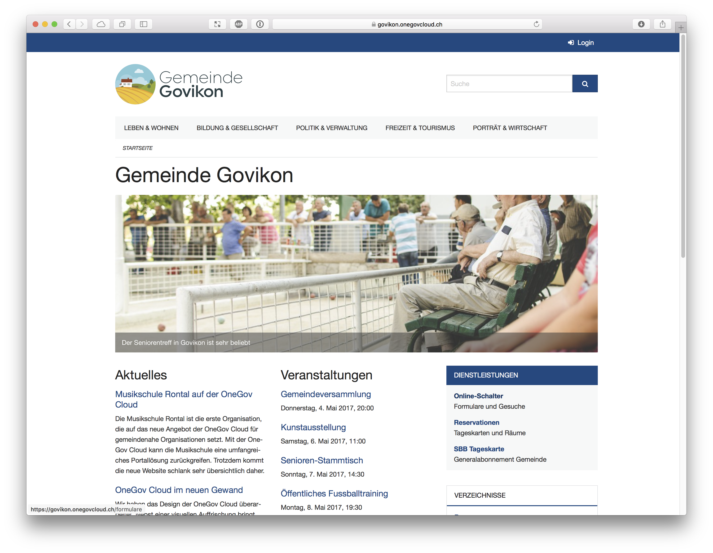

OneGov Cloud¶
Technical Documentation¶
OneGov Cloud is a Swiss initiative to provide municipalities with open-source web-applications to present and manage themselves through the web.
You’ve reached the technical documentation of this initiative intended for administrators, developers and other technical personnel.
If you want to know more about what OneGov Cloud does, please refer to https://onegovcloud.ch/
Introduction¶
OneGov Cloud is a RAD framework built with Morepath, the web micro-framework with superpowers. It enables us to write web applications for government agencies in a secure, efficient and modern manner.
OneGov Cloud has strong opinions about the technology it employs. This has the following consequences:
- It only runs on POSIX platforms.
- It uses PostgreSQL 10+ and won’t support other databases.
- It requires Python 3.6+. Python 2.x is not supported.
- It aims to provide concurrency through multiple processes and is not necessarily thread-safe.
Internationalization¶
OneGov Cloud supports multiple languages and locales. That means that number- date- and other formatting can be done in the appropriate locale. All static text can be easily translated.
Dynamic text (content) can be translated, though OneGov Cloud doesn’t offer any tools for it at this moment. This is generally a UI problem, not a framework problem.
URL paths cannot currently be translated.
Development and documentation is written exclusively in English. It’s what we are most comfortable with when it comes to software development.
Try it!¶
The latest release of OneGov Town, the flagship application of OneGov Cloud, is running on https://govikon.onegovcloud.ch.
It’s also possible to create your own OneGov Town instance through the use of our onboarding tool at https://start.onegovcloud.ch.
Development¶
Have a look at the development repository for instructions on how to get OneGov Cloud running on https://github.com/onegov/dev.
Documentation Highlights¶
Further Reading¶
Find out more about the inner workings of OneGov Cloud by having a look at the OneGov Cloud modules documentation at OneGov Cloud Modules.